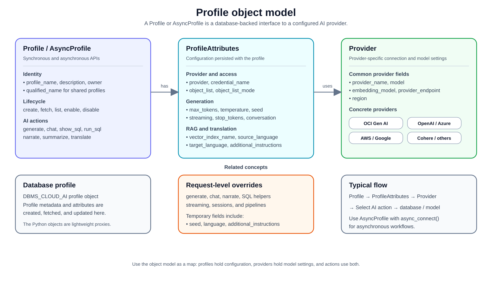

An AI profile is a specification that includes the AI provider to use and other details regarding metadata and database objects required for generating responses to natural language prompts.
An AI profile object can be created using select_ai.Profile(). Creating a
profile stores the profile in Oracle Database. Later, you can instantiate
select_ai.Profile(profile_name="...") to reuse an existing database profile
without passing all attributes again.
Before creating a profile, make sure the database user has the required privileges, a credential for the AI provider, network access to the provider endpoint, and access to the database objects included in the profile. See Privileges, Credential, Provider, and ProfileAttributes.
1. Profile lifecycle¶
The usual profile lifecycle is:
Create a provider object.
Create
ProfileAttributeswith the provider, credential name, and object list.Create the profile with
select_ai.Profile(...).Reuse the profile later by name.
Enable or disable the profile without deleting it.
Update profile attributes when provider settings or object scope changes.
Delete profiles that are no longer needed.
replace=True recreates a profile when a profile with the same name already
exists. merge=True fetches the existing profile and updates it with the
non-null attributes passed by the caller.
2. Profile actions¶
Method |
Description |
|---|---|
|
Generates SQL for a natural language prompt without executing it. |
|
Generates SQL, executes it, and returns a |
|
Generates SQL, executes it, and returns a natural language answer. |
|
Explains the generated SQL for a prompt. |
|
Shows the prompt sent to the model. |
|
Sends a general chat prompt to the model. |
|
Summarizes inline content or content referenced by a URI. |
|
Translates text from one language to another. |
2.1. Profile Object Model¶


2.2. Base Profile API¶
- class select_ai.BaseProfile(profile_name: str | None = None, attributes: ProfileAttributes | None = None, description: str | None = None, merge: bool | None = False, replace: bool | None = False, raise_error_if_exists: bool | None = True, raise_error_on_empty_attributes: bool | None = False, owner: str | None = None)¶
BaseProfile is an abstract base class representing a Profile for Select AI’s interactions with AI service providers (LLMs). Use either select_ai.Profile or select_ai.AsyncProfile to instantiate an AI profile object.
:param str profile_name : Name of the profile
- Parameters:
attributes (select_ai.ProfileAttributes) – Object specifying AI profile attributes
description (str) – Description of the profile
owner (str) – Database user that owns the profile
merge (bool) – Fetches the profile from database, merges the non-null attributes and saves it back in the database. Default value is False
replace (bool) – Replaces the profile and attributes in the database. Default value is False
raise_error_if_exists (bool) – Raise ProfileExistsError if profile exists in the database and replace = False and merge = False. Default value is True
raise_error_on_empty_attributes (bool) – Raise ProfileEmptyAttributesError, if profile attributes are empty in database. Default value is False.
2.3. Profile API¶
- class select_ai.Profile(*args, **kwargs)¶
Profile class represents an AI Profile. It defines attributes and methods to interact with the underlying AI Provider. All methods in this class are synchronous or blocking
- add_negative_feedback(prompt_spec: Tuple[str, Action] | None = None, sql_id: str | None = None, response: str | None = None, feedback_content: str | None = None)¶
Give negative feedback to the LLM
- Parameters:
prompt_spec (Tuple[str, select_ai.action.Action]) – First element is the prompt; second is the corresponding action
sql_id (str) – SQL identifier from V$MAPPED_SQL view
response (str) – Expected SQL from LLM
feedback_content (str) – Actual feedback in natural language
- add_positive_feedback(prompt_spec: Tuple[str, Action] | None = None, sql_id: str | None = None)¶
Give positive feedback to the LLM
- Parameters:
prompt_spec (Tuple[str, select_ai.action.Action]) – First element is the prompt; second is the corresponding action
sql_id (str) – SQL identifier from V$MAPPED_SQL view
- chat(prompt: str, params: Mapping = None, stream: bool = False, chunk_size: int = 8192, *, attributes: Mapping = None) str | Generator[str, None, None]¶
Chat with the LLM
- Parameters:
- Returns:
str
- chat_session(conversation: Conversation, delete: bool = False)¶
Starts a new chat session for context-aware conversations
- Parameters:
conversation (Conversation) – Conversation object to use for this chat session
delete (bool) – Delete conversation after session ends
- Returns:
- create(replace: int | None = False) None¶
Create an AI Profile in the Database
- Parameters:
replace (bool) – Set True to replace else False
- Returns:
None
- Raises:
oracledb.DatabaseError
- delete(force=False) None¶
Deletes an AI profile from the database
- Parameters:
force (bool) – Ignores errors if AI profile does not exist.
- Returns:
None
- Raises:
oracledb.DatabaseError
- delete_feedback(prompt_spec: Tuple[str, Action] = None, sql_id: str | None = None)¶
Delete feedback from the database
- Parameters:
prompt_spec (Tuple[str, select_ai.action.Action]) – First element is the prompt; second is the corresponding action
sql_id (str) – SQL identifier from V$MAPPED_SQL view
- classmethod delete_profile(profile_name: str, force: bool = False)¶
Class method to delete an AI profile from the database
- disable() None¶
Disable this AI profile in the database.
- Returns:
None
- Raises:
oracledb.DatabaseError
- explain_sql(prompt: str, params: Mapping = None, stream: bool = False, chunk_size: int = 8192, *, attributes: Mapping = None) str | Generator[str, None, None]¶
Explain the generated SQL
- Parameters:
- Returns:
str
- classmethod fetch(profile_name: str, owner: str | None = None) Profile¶
Create a proxy Profile object from fetched attributes saved in the database
- generate(prompt: str, action: Action | None = Action.RUNSQL, params: Mapping = None, stream: bool = False, chunk_size: int = 8192, *, attributes: Mapping = None) DataFrame | str | Generator[str, None, None] | None¶
Perform AI translation using this profile
- Parameters:
prompt (str) – Natural language prompt to translate
action (select_ai.action.Action)
params – Parameters to include in the LLM request. For e.g. conversation_id for context-aware chats
attributes (Mapping) – Profile attributes to override for this request
stream (bool) – Return an iterator of response chunks
chunk_size (int) – Number of characters to read per stream chunk
- Returns:
Union[pandas.DataFrame, str]
- generate_synthetic_data(synthetic_data_attributes: SyntheticDataAttributes) None¶
Generate synthetic data for a single table, multiple tables or a full schema.
- Parameters:
synthetic_data_attributes (select_ai.SyntheticDataAttributes)
- Returns:
None
- Raises:
oracledb.DatabaseError
- get_attributes() ProfileAttributes¶
Get AI profile attributes from the Database
- Returns:
select_ai.ProfileAttributes
- grant_access(user_or_role_name: str) None¶
Grant a database user or role access to this AI profile.
- Parameters:
user_or_role_name (str) – Database user or role receiving access.
- Returns:
None
- Raises:
oracledb.DatabaseError
- classmethod list(profile_name_pattern: str = '.*', owner: str | None = None) Generator[Profile, None, None]¶
List AI Profiles saved in the database.
- narrate(prompt: str, params: Mapping = None, stream: bool = False, chunk_size: int = 8192, *, attributes: Mapping = None) str | Generator[str, None, None]¶
Narrate the result of the SQL
- Parameters:
- Returns:
str
- revoke_access(user_or_role_name: str) None¶
Revoke a database user or role’s access to this AI profile.
- Parameters:
user_or_role_name (str) – Database user or role losing access.
- Returns:
None
- Raises:
oracledb.DatabaseError
- run_sql(prompt: str, params: Mapping = None, *, attributes: Mapping = None) DataFrame¶
Run the generate SQL statement and return a pandas Dataframe built using the result set
- Parameters:
prompt (str) – Natural language prompt
params – Parameters to include in the LLM request
attributes (Mapping) – Profile attributes to override for this request
- Returns:
pandas.DataFrame
- set_attribute(attribute_name: str, attribute_value: bool | str | int | float | Provider)¶
Updates AI profile attribute on the Python object and also saves it in the database
- set_attributes(attributes: ProfileAttributes)¶
Updates AI profile attributes on the Python object and also saves it in the database
- Parameters:
attributes (select_ai.ProfileAttributes) – Object specifying AI profile attributes
- Returns:
None
- show_prompt(prompt: str, params: Mapping = None, stream: bool = False, chunk_size: int = 8192, *, attributes: Mapping = None) str | Generator[str, None, None]¶
Show the prompt sent to LLM
- Parameters:
- Returns:
str
- show_sql(prompt: str, params: Mapping = None, stream: bool = False, chunk_size: int = 8192, *, attributes: Mapping = None) str | Generator[str, None, None]¶
Show the generated SQL
- Parameters:
- Returns:
str
- summarize(content: str = None, prompt: str = None, location_uri: str = None, credential_name: str = None, params: SummaryParams = None) str¶
Generate summary
- Parameters:
prompt (str) – Natural language prompt to guide the summary generation
content (str) – Specifies the text you want to summarize
location_uri (str) – Provides the URI where the text is stored or the path to a local file stored
credential_name (str) – Identifies the credential object used to authenticate with the object store
params (select_ai.summary.SummaryParams) – Parameters to include in the LLM request
2.4. Create Profile¶
The following example creates an OCI Gen AI profile that can generate SQL over
objects in the SH schema.
import os
from pprint import pformat
import select_ai
user = os.getenv("SELECT_AI_USER")
password = os.getenv("SELECT_AI_PASSWORD")
dsn = os.getenv("SELECT_AI_DB_CONNECT_STRING")
select_ai.connect(user=user, password=password, dsn=dsn)
provider = select_ai.OCIGenAIProvider(
region="us-chicago-1", oci_apiformat="GENERIC", model="openai.gpt-4.1"
)
profile_attributes = select_ai.ProfileAttributes(
credential_name="my_oci_ai_profile_key",
object_list=[{"owner": "SH"}],
provider=provider,
)
profile = select_ai.Profile(
profile_name="oci_ai_profile",
attributes=profile_attributes,
description="MY OCI AI Profile",
replace=True,
)
print("Created profile ", profile.profile_name)
profile_attributes = profile.get_attributes()
print(
"Profile attributes are: ",
pformat(profile_attributes.dict(exclude_null=False)),
)
output:
Created profile oci_ai_profile
Profile attributes are: {'annotations': None,
'case_sensitive_values': None,
'comments': None,
'constraints': None,
'conversation': None,
'credential_name': 'my_oci_ai_profile_key',
'enable_source_offsets': None,
'enable_sources': None,
'enforce_object_list': None,
'max_tokens': '1024',
'object_list': '[{"owner":"SH"}]',
'object_list_mode': None,
'provider': OCIGenAIProvider(embedding_model=None,
model=None,
provider_name='oci',
provider_endpoint=None,
region='us-chicago-1',
oci_apiformat='GENERIC',
oci_compartment_id=None,
oci_endpoint_id=None,
oci_runtimetype=None),
'seed': None,
'stop_tokens': None,
'streaming': None,
'temperature': None,
'vector_index_name': None}
2.5. Reuse Profile¶
After a profile has been created, instantiate Profile with only the profile
name to reuse the database profile:
profile = select_ai.Profile(profile_name="oci_ai_profile")
sql = profile.show_sql(prompt="How many promotions?")
Use Profile.fetch(...) when you want to create a proxy object from a saved
database profile and raise an error if the profile does not exist:
profile = select_ai.Profile.fetch("oci_ai_profile")
2.6. Enable and disable Profile¶
Use Profile.disable() to make an existing profile unavailable without
deleting it. Call Profile.enable() to make it available again. These
methods change the database profile status and return None.
import os
import select_ai
user = os.getenv("SELECT_AI_USER")
password = os.getenv("SELECT_AI_PASSWORD")
dsn = os.getenv("SELECT_AI_DB_CONNECT_STRING")
profile_name = os.getenv("SELECT_AI_PROFILE_NAME", "oci_ai_profile")
select_ai.connect(user=user, password=password, dsn=dsn)
profile = select_ai.Profile(profile_name=profile_name)
profile.disable()
try:
print("Disabled profile:", profile.profile_name)
finally:
profile.enable()
print("Enabled profile:", profile.profile_name)
The sample uses SELECT_AI_PROFILE_NAME when set, otherwise it operates on
oci_ai_profile. It always re-enables the profile during cleanup:
output:
Disabled profile: oci_ai_profile
Enabled profile: oci_ai_profile
2.7. Update Profile¶
Use set_attribute(...) to update one profile attribute or
set_attributes(...) to update several attributes. Updates are saved to the
database profile.
profile = select_ai.Profile(profile_name="oci_ai_profile")
profile.set_attribute("temperature", 0.1)
profile.set_attributes(
select_ai.ProfileAttributes(
max_tokens=2048,
enforce_object_list=True,
)
)
2.8. Delete Profile¶
Use delete(...) or Profile.delete_profile(...) to remove a profile from
the database. Pass force=True when cleanup should succeed even if the
profile does not exist.
profile = select_ai.Profile(profile_name="oci_ai_profile")
profile.delete(force=True)
select_ai.Profile.delete_profile("oci_ai_profile", force=True)
2.9. Narrate¶
import os
import select_ai
user = os.getenv("SELECT_AI_USER")
password = os.getenv("SELECT_AI_PASSWORD")
dsn = os.getenv("SELECT_AI_DB_CONNECT_STRING")
select_ai.connect(user=user, password=password, dsn=dsn)
profile = select_ai.Profile(
profile_name="oci_ai_profile",
)
narration = profile.narrate(prompt="How many promotions?")
print(narration)
output:
There are 503 promotions in the database.
2.10. Show SQL¶
import os
import select_ai
user = os.getenv("SELECT_AI_USER")
password = os.getenv("SELECT_AI_PASSWORD")
dsn = os.getenv("SELECT_AI_DB_CONNECT_STRING")
select_ai.connect(user=user, password=password, dsn=dsn)
profile = select_ai.Profile(profile_name="oci_ai_profile")
sql = profile.show_sql(prompt="How many promotions ?")
print(sql)
output:
SELECT
COUNT("p"."PROMO_ID") AS "Number of Promotions"
FROM "SH"."PROMOTIONS" "p"
2.11. Explain SQL¶
Use explain_sql(...) to generate SQL and return a natural language
explanation without executing the SQL.
profile = select_ai.Profile(profile_name="oci_ai_profile")
explanation = profile.explain_sql(prompt="How many promotions?")
print(explanation)
2.12. Show Prompt¶
Use show_prompt(...) to inspect the prompt that Select AI sends to the
model. This is useful when tuning profile attributes, object lists, comments,
constraints, and provider settings.
profile = select_ai.Profile(profile_name="oci_ai_profile")
prompt = profile.show_prompt(prompt="How many promotions?")
print(prompt)
2.13. Run SQL¶
import os
import select_ai
user = os.getenv("SELECT_AI_USER")
password = os.getenv("SELECT_AI_PASSWORD")
dsn = os.getenv("SELECT_AI_DB_CONNECT_STRING")
select_ai.connect(user=user, password=password, dsn=dsn)
profile = select_ai.Profile(profile_name="oci_ai_profile")
df = profile.run_sql(prompt="How many promotions ?")
print(df.columns)
print(df)
output:
Index(['Number of Promotions'], dtype='object')
Number of Promotions
0 503
2.14. Chat¶
import os
import select_ai
user = os.getenv("SELECT_AI_USER")
password = os.getenv("SELECT_AI_PASSWORD")
dsn = os.getenv("SELECT_AI_DB_CONNECT_STRING")
select_ai.connect(user=user, password=password, dsn=dsn)
profile = select_ai.Profile(profile_name="oci_ai_profile")
response = profile.chat(prompt="What is OCI ?")
print(response)
output:
OCI stands for Oracle Cloud Infrastructure. It is a comprehensive cloud computing platform provided by Oracle Corporation that offers a wide range of services for computing, storage, networking, database, and more.
...
...
OCI competes with other major cloud providers, including Amazon Web Services (AWS), Microsoft Azure, Google Cloud Platform (GCP), and IBM Cloud.
2.15. Streaming chat¶
import os
import select_ai
user = os.getenv("SELECT_AI_USER")
password = os.getenv("SELECT_AI_PASSWORD")
dsn = os.getenv("SELECT_AI_DB_CONNECT_STRING")
select_ai.connect(user=user, password=password, dsn=dsn)
profile = select_ai.Profile(profile_name="oci_ai_profile")
for chunk in profile.chat(
prompt="What is OCI ?", stream=True, chunk_size=4096
):
print(chunk, end="")
print()
stream=True lets callers consume generated CLOB responses chunk by chunk,
reducing memory pressure and making it easier to progressively forward output
to files, services, or user interfaces. Streaming text APIs return an iterator
of str chunks. The chunk_size parameter controls the number of CLOB
characters read per chunk; it is not a byte count.
Streaming is supported by generate(), chat(), narrate(),
explain_sql(), show_sql(), and show_prompt(). It is not supported
for run_sql(), which returns a pandas.DataFrame.
The SDK calls the database function before reading the returned CLOB in
chunks. This is CLOB consumption, rather than a guarantee that model tokens
arrive while generation is in progress. The first chunk is available only
after the database function returns. A partially consumed iterator keeps its
cursor and connection open. Close it if you stop early, and consume session
streams before leaving chat_session():
from contextlib import closing
with closing(profile.chat("Explain connection pooling.", stream=True)) as chunks:
for chunk in chunks:
print(chunk, end="")
# Breaking here also closes the iterator on context exit.
2.16. Request-level profile attribute overrides¶
The attributes keyword accepts a mapping of profile attributes to apply to
one request. These values override the corresponding saved profile attributes
for that request only; they do not update the profile in the database. The
mapping must contain JSON-serializable values.
Request-level attributes are available on the following synchronous APIs:
Profile.generate(),chat(), andnarrate().SQL helpers:
explain_sql(),run_sql(),show_sql(), andshow_prompt().Session.chat(),narrate(),explain_sql(),run_sql(),show_sql(), andshow_prompt().Streaming calls to the text-producing methods, by combining
stream=Truewithattributes=....run_sql()does not support streaming.
The mapping can include attributes such as additional_instructions,
the integer seed, and source_language or target_language. Use
ProfileAttributes for profile-wide defaults; use this mapping when an
override should apply only to the current request.
For translate(), pass language values through its named
source_language and target_language arguments. The attributes
mapping described here applies to the generate/action APIs.
request_attributes = {
"additional_instructions": "Answer in one sentence.",
"seed": 42,
"source_language": "en",
"target_language": "de",
}
response = profile.chat(
prompt="What is Oracle Cloud Infrastructure?",
attributes=request_attributes,
)
The same mapping can be used with streaming and session requests:
for chunk in profile.chat(
prompt="Summarize Oracle Cloud Infrastructure.",
stream=True,
attributes=request_attributes,
):
print(chunk, end="")
with profile.chat_session(conversation) as session:
response = session.chat(
prompt="Give one more detail.",
attributes=request_attributes,
)
The following sample uses show_prompt() to verify that the request-only
additional_instructions value reached the generated prompt:
import os
import select_ai
user = os.getenv("SELECT_AI_USER")
password = os.getenv("SELECT_AI_PASSWORD")
dsn = os.getenv("SELECT_AI_DB_CONNECT_STRING")
profile_name = os.getenv("SELECT_AI_PROFILE_NAME", "oci_ai_profile")
select_ai.connect(user=user, password=password, dsn=dsn)
profile = select_ai.Profile(profile_name=profile_name)
instruction = "Include the exact marker PYSAI_REQUEST_ATTRIBUTES_SAMPLE."
request_attributes = {
"additional_instructions": instruction,
"seed": 42,
"source_language": "en",
"target_language": "de",
}
prompt = profile.show_prompt(
prompt="Tell me about Oracle Cloud Infrastructure.",
attributes=request_attributes,
)
print("Request attributes applied:", instruction in prompt)
output:
Request attributes applied: True
2.17. Summarize¶
Summarize inline content
import os
import select_ai
user = os.getenv("SELECT_AI_USER")
password = os.getenv("SELECT_AI_PASSWORD")
dsn = os.getenv("SELECT_AI_DB_CONNECT_STRING")
content = """
A gas cloud in our galaxy, Sagittarius B2, contains enough alcohol to brew 400
trillion pints of beer, and some stars are so cool that you could touch them
without being burned. Meanwhile, on the exoplanet 55 Cancri e, a form of
"hot ice" exists where high pressure prevents water from becoming gas even at
high temperatures. Additionally, some ancient stars found in the Milky Way's
halo are much older than the Sun, providing clues about the early universe and
its composition
"""
select_ai.connect(user=user, password=password, dsn=dsn)
profile = select_ai.Profile(profile_name="oci_ai_profile")
summary = profile.summarize(content=content)
print(summary)
output:
A gas cloud in the Sagittarius B2 galaxy contains a large amount of alcohol,
while some stars are cool enough to touch without being burned. The exoplanet
55 Cancri e has a unique form of "hot ice" where water remains solid despite
high temperatures due to high pressure. Ancient stars in the Milky Way's halo
are older than the Sun, providing insights into the early universe and its composition,
offering clues about the universe's formation and evolution.
Summarize content accessible via a URL
import os
import select_ai
user = os.getenv("SELECT_AI_USER")
password = os.getenv("SELECT_AI_PASSWORD")
dsn = os.getenv("SELECT_AI_DB_CONNECT_STRING")
select_ai.connect(user=user, password=password, dsn=dsn)
profile = select_ai.Profile(profile_name="oci_ai_profile")
summary = profile.summarize(
location_uri="https://en.wikipedia.org/wiki/Astronomy"
)
print(summary)
output:
Astronomy is a natural science that studies celestial objects and phenomena,
using mathematics, physics, and chemistry to explain their origin and evolution.
The field has a long history, with early civilizations making methodical
observations of the night sky, and has since split into observational and
theoretical branches. Observational astronomy focuses on acquiring data
from observations, while theoretical astronomy develops computer or
analytical models to describe astronomical objects and phenomena. The study
of astronomy has led to numerous discoveries, including the existence of
galaxies, the expansion of the universe, and the detection of gravitational
waves. Astronomers use various methods, such as radio, infrared, optical,
ultraviolet, X-ray, and gamma-ray astronomy, to study objects and events in
the universe. The field has also led to the development of new technologies and
has inspired new areas of research, such as astrobiology and the search for
extraterrestrial life. Overall, astronomy is a dynamic and constantly evolving
field that seeks to understand the universe and its many mysteries.
2.18. Translate¶
Profile.translate() accepts optional source_language and
target_language arguments. Per-call values take precedence over the
profile’s source_language and target_language defaults.
If source_language is omitted for both the call and the profile, source
language detection is delegated to the translation provider. If
target_language is omitted, the profile’s default is used; a target
language must be supplied in one of those two places.
Configure profile-level defaults with ProfileAttributes when creating or
updating a profile:
language_defaults = select_ai.ProfileAttributes(
source_language="en",
target_language="de",
)
profile.set_attributes(language_defaults)
print(profile.translate(text="Thank you"))
When only the target is supplied at the call site, the provider can detect the source language:
print(profile.translate(text="Thank you", target_language="de"))
import os
import select_ai
user = os.getenv("SELECT_AI_USER")
password = os.getenv("SELECT_AI_PASSWORD")
dsn = os.getenv("SELECT_AI_DB_CONNECT_STRING")
profile_name = os.getenv("SELECT_AI_PROFILE_NAME", "oci_ai_profile")
select_ai.connect(user=user, password=password, dsn=dsn)
profile = select_ai.Profile(profile_name=profile_name)
response = profile.translate(text="Thank you", target_language="de")
print(response)
output:
Danke
2.20. Give feedback on generated SQL¶
Use feedback after reviewing the SQL produced for a prompt. Identify the
request with a (prompt, Action) tuple or a sql_id from
V$MAPPED_SQL. The example below assumes an open connection and an
existing profile over the SH schema:
profile = select_ai.Profile.fetch("OCI_AI_PROFILE")
prompt = "How many promotions?"
sql = profile.show_sql(prompt=prompt)
print(sql)
After inspecting the SQL, record positive feedback if it answers the question:
profile.add_positive_feedback(
prompt_spec=(prompt, select_ai.Action.SHOWSQL)
)
For an incorrect answer, use add_negative_feedback() with the same request
identifier, response containing the expected SQL, and feedback_content
explaining the correction. Remove obsolete feedback with
delete_feedback() and the same request identifier.
2.21. List profiles¶
Use Profile.list() to discover saved profiles in the current schema.
Call it on the class; you do not need to create an empty profile first.
Each returned object includes profile_name, owner, and the
owner-qualified qualified_name.
2.21.1. Connect and list your profiles¶
Set SELECT_AI_USER, SELECT_AI_PASSWORD, and
SELECT_AI_DB_CONNECT_STRING before running this complete script. It prints
one qualified name per profile and closes the connection afterward:
import os
import select_ai
select_ai.connect(
user=os.environ["SELECT_AI_USER"],
password=os.environ["SELECT_AI_PASSWORD"],
dsn=os.environ["SELECT_AI_DB_CONNECT_STRING"],
)
try:
for profile in select_ai.Profile.list():
print(profile.qualified_name)
finally:
select_ai.disconnect()
For a schema named APP_OWNER containing two profiles, the output could be:
APP_OWNER.OCI_AI_PROFILE
APP_OWNER.OCI_VECTOR_AI_PROFILE
Your results depend on the profiles visible in your schema; result order is not guaranteed. An empty result means no profiles match the requested scope.
2.21.2. Filter by name¶
With a connection open, use profile_name_pattern to match names with a
regular expression. This example lists names starting with OCI_:
for profile in select_ai.Profile.list(profile_name_pattern="^OCI_"):
print(profile.qualified_name)